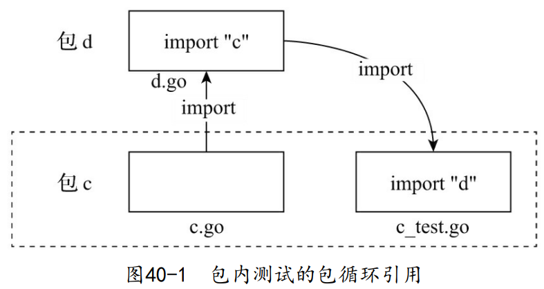
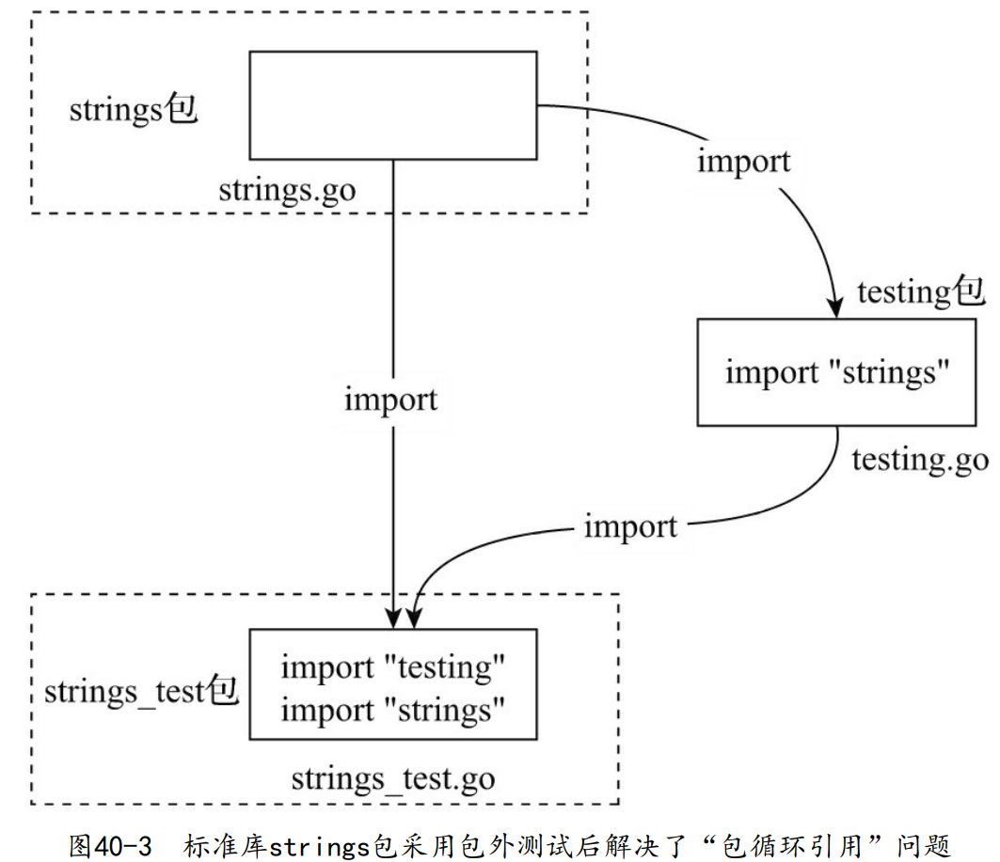
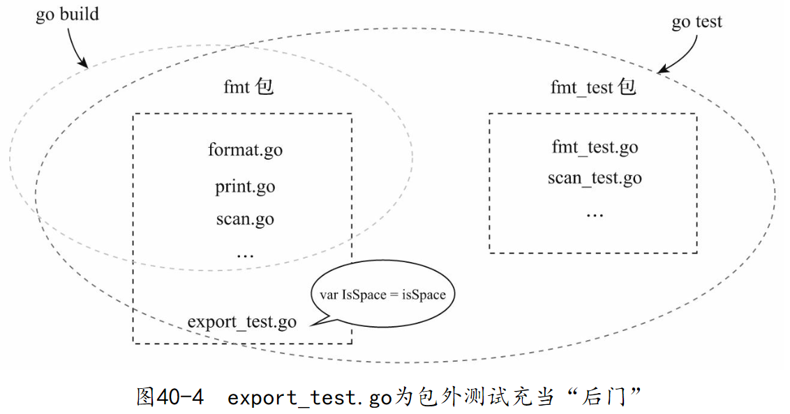

Go语言在工具链和标准库中提供对测试的原生支持
1. 官方文档的“自相矛盾”
- 下面示关于testing包的一端官方文档（Go 1.14版本）摘录：
要编写一个新的测试集（test suite），创建一个包含 TestXxx函数的以_test.go为文件名结尾的文件。将这个测试文件放在与被测试包相同的包下面。编译被测试包时，该文件将被排除在外；执行go test时，该文件将被包含在内。
这意味着我们要把对foo包的测试代码放在包名同样为foo的测试文件中。（包内测试）
- 但在介绍go test命令时，Go文档如是说：
那些包名中带有_test后缀的测试文件将被编译成一个独立的包，这个包之后会被链接到主测试二进制文件中并运行。
这意味着我们要把对foo包的测试代码放在包名为foo_test的测试文件中。（包外测试）
2. 包内测试与包外测试
2.1. Go标准库中包内测试和包外测试的使用情况
在$GOROOT/src目录下（Go 1.14版本），执行下面的命令组合：
// 统计标准库中采用包内测试的测试文件数量
$find . -name "*_test.go" |xargs grep package |grep ':package'|grep -v "_test$"|wc -l
691
// 统计标准库中采用包外测试的测试文件数量
$find . -name "*_test.go" |xargs grep package |grep ':package'|grep "_test$" |wc -l
448
在$GOROOT/src/net/http目录下，分别执行下面命令：
$go list -f={ {.XTestGoFiles} }
[alpn_test.go client_test.go clientserver_test.go example_filesystem_test.go example_handle_test.go example_test.go fs_test.go main_test.go
request_test.go serve_test.go sniff_test.go transport_test.go]
$go list -f={ {.TestGoFiles} }
[cookie_test.go export_test.go filetransport_test.go header_test.go
http_test.go proxy_test.go range_test.go readrequest_test.go
requestwrite_test.go response_test.go responsewrite_test.go
server_test.go transfer_test.go transport_internal_test.go]
我们看到，在针对net/http的测试代码中，对包内测试和包外测试的使用仍然不分伯仲。
2.2. 包内测试
- 优势：
- 包内测试这种方法本质上是一种白盒测试方法。
- 由于测试代码与被测包源码在同一包名下，测试代码可以访问该包下的所有符号，无论是导出符号还是未导出符号；
- 并且由于包的内部实现逻辑对测试代码是透明的，包内测试可以更为直接地构造测试数据和实施测试逻辑，可以很容易地达到较高的测试覆盖率。
- 不足：
- 测试代码自身需要经常性的维护：因为包内测试是一种面向实现的测试。测试代码通常与被测包的具体实现是紧耦合的。
- 包循环引用：很容易会带来包循环引用现象，而这是Go编译器不允许的

2.3. 包外测试
- 优势：
- 包外测试的本质是一种面向接口的黑盒测试。
- 这一本质让包外测试代码与被测试包充分解耦，使得针对这些导出API进行测试的包外测试代码表现出十分健壮的特性。
- 避免了包循环引用现象。

- 不足：
- 存在测试盲区：由于测试代码与被测试目标并不在同一包名下，测试代码仅有权访问被测包的导出符号，并且仅能通过导出API这一有限的“窗口”来验证被测包行为。
- 在这样的约束下，很容易出现对被测试包的测试覆盖不足的情况。
- Go标准库的实现者们提供了一个解决这个问题的惯用法：安插后门。即使用export_test.go文件暴露被测包内部

2.4. 优先使用包外测试
- 包外测试由于将测试代码放入独立的包中，它更适合编写偏向集成测试的用例；
- 包内测试更聚焦于内部逻辑的测试，通过给函数/方法传入一些特意构造的数据的方式来验证内部逻辑的正确性；